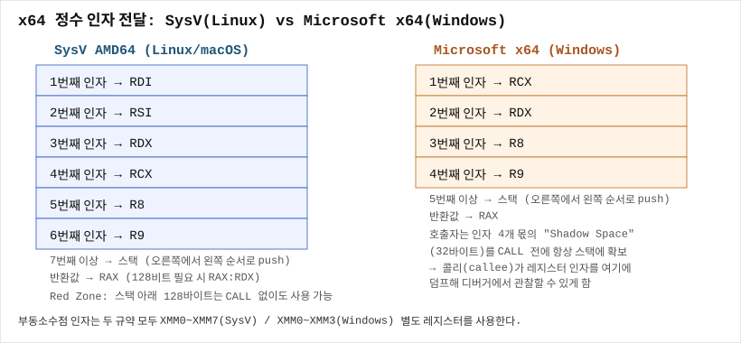

Microsoft x64 Calling Convention
한 줄 요약
Windows x64(Microsoft x64 calling convention)는 정수/포인터 인자를 순서대로 RCX, RDX, R8, R9(부동소수점은 XMM0~XMM3)에 담고, 호출하는 쪽이 항상 최소 32바이트의 shadow space(home space)를 스택에 미리 확보해야 한다는 점에서 Linux SysV AMD64(RDI, RSI, RDX, RCX, R8, R9, shadow space 없음)와 근본적으로 다르다.
언제 검색해야 하나
- Windows PE 바이너리의
call직전에mov rcx, ...,mov rdx, ...가 보이는데 왜 SysV처럼RDI,RSI가 아니라RCX,RDX부터 시작하는지 궁금할 때 call직전에 매번sub rsp, 0x20이 보이는데 이게 왜 있는지, 로컬 변수 공간과 뭐가 다른지 궁금할 때- Linux 바이너리(SysV, REV-0106 참고)를 분석하다가 Windows 바이너리로 넘어왔는데 인자 레지스터 순서가 달라서 헷갈릴 때
- 5번째, 6번째 인자가 어디 있는지(레지스터로 계속 가는지, 스택으로 넘어가는지) 확인하고 싶을 때
RCX가 왜 항상 "네 번째"가 아니라 "첫 번째" 인자로 쓰이는지, SysV와 왜 이렇게 다르게 설계됐는지 궁금할 때
핵심 개념
정수/포인터 인자 전달 순서: RCX, RDX, R8, R9
Microsoft x64 calling convention(공식 문서에서는 "x64 calling convention"이라 부르며, 이 위키에서는 SysV와 구분하기 위해 "Microsoft x64"라 표기한다)은 정수·포인터 인자를 왼쪽부터 순서대로 다음 네 레지스터에 담는다.

1번째 인자: RCX
2번째 인자: RDX
3번째 인자: R8
4번째 인자: R9
5번째 인자부터: 스택 (call 이후 [rsp+0x20]부터, 아래 "스택 배치" 절 참고)32비트 값(int 등)이라면 ECX, EDX, R8D, R9D처럼 하위 32비트 이름이 쓰인다. Linux SysV(REV-0106)와 비교하면 다음과 같은 차이가 바로 보인다.
SysV (Linux) : RDI, RSI, RDX, RCX, R8, R9 → 정수 인자 레지스터 6개
MS x64 (Win) : RCX, RDX, R8, R9 → 정수 인자 레지스터 4개레지스터 이름과 순서가 겹치는 부분(RDX, RCX, R8, R9)이 있어서 더 헷갈리기 쉽다 — 예를 들어 RCX는 SysV에서는 4번째 인자지만 Windows에서는 1번째 인자다. 두 규약을 오가며 분석할 때 이 점이 가장 흔한 혼동 지점이다.
부동소수점 인자: XMM0~XMM3
double, float 인자는 XMM0, XMM1, XMM2, XMM3 순서로 채워진다. 여기서 SysV와 결정적으로 다른 규칙이 하나 있다 — Microsoft x64는 정수 레지스터와 부동소수점 레지스터가 "같은 위치 번호"를 공유하는 하나의 슬롯 시스템을 쓴다. 즉 void f(int a, double b, int c)를 호출한다면, a는 1번째 슬롯이므로 RCX, b는 2번째 슬롯이므로 XMM1(정수용 RDX가 아니라!), c는 3번째 슬롯이므로 R8에 들어간다. SysV처럼 정수 카운터와 부동소수점 카운터가 독립적으로 따로 움직이지 않는다는 점이 중요한 차이다.
Shadow Space(Home Space): Windows만의 독특한 규칙
Microsoft x64 calling convention에서 가장 특징적인 규칙이 바로 이것이다. 함수를 호출하는 쪽(caller)은 call 명령을 실행하기 전에, 인자 개수와 무관하게 항상 최소 32바이트(레지스터 4개 × 8바이트)의 스택 공간을 미리 확보해야 한다. 이를 shadow space 또는 home space라고 부른다.
sub rsp, 0x20 ; shadow space 확보 (인자가 몇 개든 최소 0x20)
mov rcx, ... ; 1번째 인자
mov rdx, ... ; 2번째 인자
call SomeFunction
add rsp, 0x20 ; 정리이 공간의 용도는 두 가지다.
- 호출된 함수가 레지스터 인자(
RCX/RDX/R8/R9)를 스택에 "되돌려 저장(spill)"할 수 있는 자리를 미리 마련해준다. 디버거로 함수 인자를 볼 때, 함수 내부가mov [rsp+8], rcx같은 코드로 자신의 첫 인자를 shadow space에 옮겨 저장하는 패턴을 흔히 볼 수 있다 — 이렇게 하면 그 함수 안에서RCX를 다른 용도로 재사용해도 원래 인자 값을 스택에서 다시 읽을 수 있다. - 디버거/도구가 스택 워크(stack walk) 중 레지스터 인자 값을 일관된 위치에서 찾을 수 있게 해준다.
SysV(Linux)에는 이런 shadow space 개념이 아예 없다 — 이것이 Windows x64와 Linux x64 디스어셈블리를 구분하는 가장 눈에 띄는 시각적 차이 중 하나다. Windows 바이너리의 call 직전에 거의 항상 sub rsp, 0x20(또는 그 이상)이 보인다면 그게 바로 shadow space다.
5번째 인자부터: 스택 배치
5번째 인자부터는 스택에 쌓이는데, 이때도 shadow space 때문에 배치가 SysV보다 약간 복잡하다. call 실행 직후(리턴 주소가 push된 직후) 기준으로:
[rsp+0x00] = 리턴 주소
[rsp+0x08] = 1번째 인자용 shadow space (RCX의 home)
[rsp+0x10] = 2번째 인자용 shadow space (RDX의 home)
[rsp+0x18] = 3번째 인자용 shadow space (R8의 home)
[rsp+0x20] = 4번째 인자용 shadow space (R9의 home)
[rsp+0x28] = 5번째 인자 (진짜 스택 인자는 여기서부터 시작)
[rsp+0x30] = 6번째 인자
...즉 shadow space 4개 슬롯이 항상 먼저 자리를 차지하고, 진짜 5번째 인자는 그 뒤([rsp+0x28])부터 시작한다. SysV는 이런 고정 슬롯 없이 7번째 인자부터 곧바로 스택에 쌓이므로, 두 규약의 스택 레이아웃을 혼동하면 인자 위치를 잘못 읽게 된다.
반환값
정수/포인터 반환값은 RAX(또는 32비트면 EAX)에 담긴다. 부동소수점 반환값은 XMM0에 담긴다. 16바이트를 넘는 구조체를 값으로 반환할 때는 호출자가 미리 준비한 버퍼의 포인터가 암묵적인 첫 번째 인자로 RCX에 들어가고(나머지 인자는 한 칸씩 밀림), 함수는 그 버퍼에 결과를 채운 뒤 같은 포인터를 RAX에도 담아 반환한다.
Caller-saved vs Callee-saved
Caller-saved(volatile): RAX, RCX, RDX, R8, R9, R10, R11, XMM0~XMM5
Callee-saved(non-volatile): RBX, RBP, RDI, RSI, RSP, R12~R15, XMM6~XMM15SysV와 비교하면 눈에 띄는 차이가 있다 — RDI, RSI가 SysV에서는 caller-saved(인자 레지스터라서)인 반면, Windows에서는 callee-saved다. Windows에서는 RDI/RSI가 인자 전달에 안 쓰이기 때문에 이 두 레지스터를 범용 로컬 변수용으로 자유롭게 쓸 수 있고, 대신 함수가 이 값을 보존해야 한다. 또한 XMM6~XMM15가 Windows에서는 callee-saved라는 점도 SysV(전체 XMM 레지스터가 caller-saved)와 다른 부분이라 부동소수점을 많이 쓰는 함수를 분석할 때 유의해야 한다.
스택 정렬 규칙
SysV와 마찬가지로, call 명령이 실행되는 순간(리턴 주소가 push되기 직전) RSP는 16의 배수여야 한다. 이 규칙은 SysV와 Windows 양쪽 다 동일하다 — SSE 계열 명령어의 16바이트 정렬 요구사항이 아키텍처 차원의 제약이기 때문이다.
가변 인자 함수(vararg)
Windows x64에서 가변 인자 함수(printf 계열)를 호출할 때는 SysV처럼 AL에 XMM 사용 개수를 넣는 규칙이 없다. 대신 부동소수점 인자라도 정수 레지스터 슬롯 자리(RCX/RDX/R8/R9)에도 동일한 값의 복사본을 넣어야 한다는 규칙이 있다 — 가변 인자 함수는 컴파일 시점에 각 인자 타입을 정확히 알 수 없으므로, 호출된 함수가 정수 레지스터만 보고도 부동소수점 인자를 구제할 수 있게 하기 위함이다.
화면/코드에서 보이는 징후
call직전에sub rsp, 0x20(또는 인자가 5개 이상이면 더 큰 값)이 반복적으로 보임- 함수 진입부에
mov [rsp+8], rcx,mov [rsp+0x10], rdx처럼 인자 레지스터를 shadow space에 옮겨 저장하는 코드 call직전 레지스터 세팅이RCX→RDX→R8→R9순서로 이뤄짐(SysV라면RDI부터 시작했을 자리)- IDA 디컴파일러가 Windows PE를 열었을 때 함수 프로토타입에
__fastcall계열(x64에서는 이 규약이 기본이라 별도 표기가 생략되기도 함)로 인식
가장 먼저 할 것
분석 중인 바이너리가 PE(Windows)인지 ELF(Linux)인지부터 확인한다(REV-0114 등에서 다룬 파일 포맷 식별). PE라면 call 직전의 레지스터 세팅을 RCX부터 읽기 시작하고, sub rsp, 0x20 같은 shadow space 확보 코드를 로컬 변수 할당과 혼동하지 않도록 구분한다.
단계별 절차
1) call 직전 레지스터 세팅을 RCX부터 확인 IDA/x64dbg에서 call 명령어를 찾고, 그 위 몇 줄에서 RCX, RDX, R8, R9에 어떤 값이 들어가는지 순서대로 표시한다.
2) x64dbg에서 call 직전에 멈춰서 실제 값 확인
call 주소에 브레이크포인트(F2)
실행(F9) 후 멈추면 레지스터 패널에서 RCX, RDX, R8, R9 확인3) shadow space와 진짜 스택 인자 구분
call 직전 RSP 기준으로 [rsp+0x20] 이후가 5번째 인자부터의 진짜 스택 인자
(call 실행 후, 즉 함수 진입 시점 기준이라면 [rsp+0x28] 이후)4) 반환값 확인
x64dbg: 함수 리턴 지점까지 실행(Ctrl+F9 또는 "Run to return") 후 RAX 확인
부동소수점이면 XMM0 확인명령어/단축키
x64dbg: F2(브레이크포인트), F9(실행), F8(Step Over), F7(Step Into)
x64dbg: 레지스터 패널에서 RCX/RDX/R8/R9/RAX/XMM0 직접 확인
IDA: Alt+T로 텍스트 검색, "call" 명령 앞뒤 몇 줄을 훑어 레지스터 세팅 패턴 확인출력 해석
RCX,RDX,R8,R9에 순서대로 값이 채워지고 그 앞에sub rsp, 0x20이 있다면 전형적인 Windows x64 함수 호출- 함수 진입부에서
RCX를 다른 레지스터나 스택에 즉시 복사한 뒤RCX자체는 다른 계산에 재사용한다면, 이는 shadow space를 활용해 원래 인자 값을 보존하는 흔한 컴파일러 패턴 XMM0~XMM3레지스터에 값이 있는데 대응하는 정수 레지스터(RCX등)에도 같은 비트 패턴이 들어 있다면 가변 인자 함수 호출일 가능성이 높음
흔한 실수
- SysV 규약을 기준으로 생각해서 Windows 바이너리에서
RDI,RSI를 인자 레지스터로 착각하는 것 — Windows에서 이 둘은 callee-saved 범용 레지스터다. sub rsp, 0x20을 로컬 변수 할당으로 착각해서 "이 함수가 지역 변수를 4개(8바이트씩) 쓴다"고 잘못 해석하는 것 — 함수 호출 직전의 이 패턴은 대개 shadow space 확보다. 함수 프롤로그에서의sub rsp, N(로컬 변수용)과 헷갈리지 않도록, 이 명령이call직전인지 함수 시작 부분인지 위치를 확인해야 한다.- 5번째 인자를 찾을 때
[rsp+0x20]을 바로 5번째 인자라고 착각하는 것 —call실행 후(함수 진입 시점) 기준으로는[rsp+0x28]부터가 진짜 5번째 인자다.call직전(리턴 주소 push 전) 기준이면 오프셋이 다시 8만큼 달라지므로, 항상 "어느 시점 기준의 RSP인지"를 먼저 명확히 해야 한다. - 부동소수점 인자가 정수 인자와 같은 카운터를 공유한다는 걸 몰라서,
void f(int, double, int)같은 함수에서 두 번째 정수 인자를RDX에서 찾으려다 못 찾고 헤매는 것 — 정답은R8이다(슬롯 번호는 인자 순서를 그대로 따르고, 타입에 따라 정수/XMM 레지스터 중 해당하는 것을 쓸 뿐이다). - Windows와 Linux 바이너리를 같은 화면에서 비교 분석할 때 두 규약을 섞어서 착각하는 것 — 항상 지금 보고 있는 파일이 PE인지 ELF인지부터 재확인하는 습관이 필요하다.
막혔을 때 다음 체크
- Linux SysV AMD64와의 전체 비교가 필요하면 → SysV AMD64 Calling Convention
- x86(32비트) Windows의 stdcall/cdecl/fastcall/thiscall이 궁금하면 → REV-0123 Windows x86 stdcall cdecl fastcall thiscall
- 인자와 반환값 위치에 대한 기초 개념부터 다시 보고 싶으면 → 함수 인자와 반환값이 어디에 있는지
WinMain으로 들어가는 CALL의 인자를 실전에서 어떻게 읽는지 궁금하면 → REV-0121 Entry Point와 WinMain 찾기
미니 예제
long long Sum4(long long a, long long b, long long c, long long d) {
return a + b + c + d;
}
int main(void) {
return (int)Sum4(1, 2, 3, 4);
}; Sum4(1, 2, 3, 4) 호출부
sub rsp, 0x20 ; shadow space 확보
mov r9d, 4 ; d
mov r8d, 3 ; c
mov edx, 2 ; b
mov ecx, 1 ; a
call Sum4
add rsp, 0x20
; Sum4 본문 (일부 컴파일러/최적화 수준에서는 shadow space에 인자를 저장)
Sum4:
mov [rsp+8], rcx ; a를 shadow space에 저장
mov [rsp+0x10], rdx ; b
mov [rsp+0x18], r8 ; c
mov [rsp+0x20], r9 ; d
mov rax, [rsp+8]
add rax, [rsp+0x10]
add rax, [rsp+0x18]
add rax, [rsp+0x20]
retRCX=1, RDX=2, R8=3, R9=4가 채워진 뒤 call Sum4가 실행되고, Sum4 내부는 이 값들을 shadow space([rsp+8]~[rsp+0x20])에 옮겨 저장한 뒤 계산해 RAX에 결과(10)를 담아 반환한다. SysV였다면 같은 함수가 RDI=1, RSI=2, RDX=3, RCX=4로, shadow space 확보 코드 없이 곧바로 call됐을 것이다 — 이 대비가 두 규약의 차이를 가장 압축적으로 보여준다.
관련 글
- REV-0106 — SysV AMD64 Calling Convention
- REV-0123 — Windows x86 stdcall cdecl fastcall thiscall
- REV-0032 — 함수 인자와 반환값이 어디에 있는지
- REV-0121 — Entry Point와 WinMain 찾기
출처/검증
- 정수/부동소수점 인자 레지스터 순서(
RCX, RDX, R8, R9/XMM0~XMM3)와 슬롯 공유 규칙: Microsoft Learn "x64 calling convention" 공식 문서 기준 (2026-09-08 검증). - Shadow space(home space) 32바이트 규칙: Microsoft Learn "x64 calling convention" 문서의 "Stack Allocation" 절 기준.
- Caller-saved/Callee-saved 레지스터 목록: Microsoft Learn "x64 calling convention" 문서의 "Caller/Callee Saved Registers" 표 기준.
- 가변 인자 함수의 정수/XMM 레지스터 이중 저장 규칙: Microsoft Learn "x64 calling convention" 문서의 가변 인자 관련 절 기준.